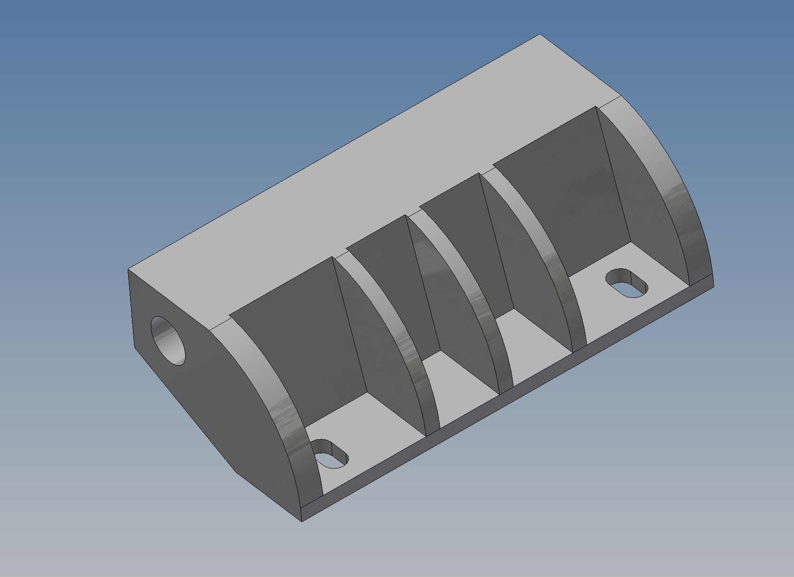
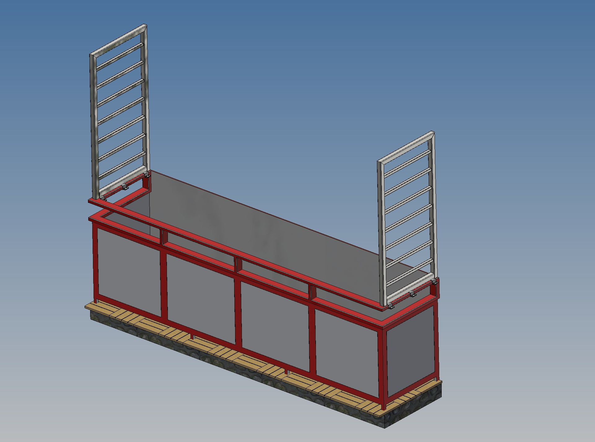
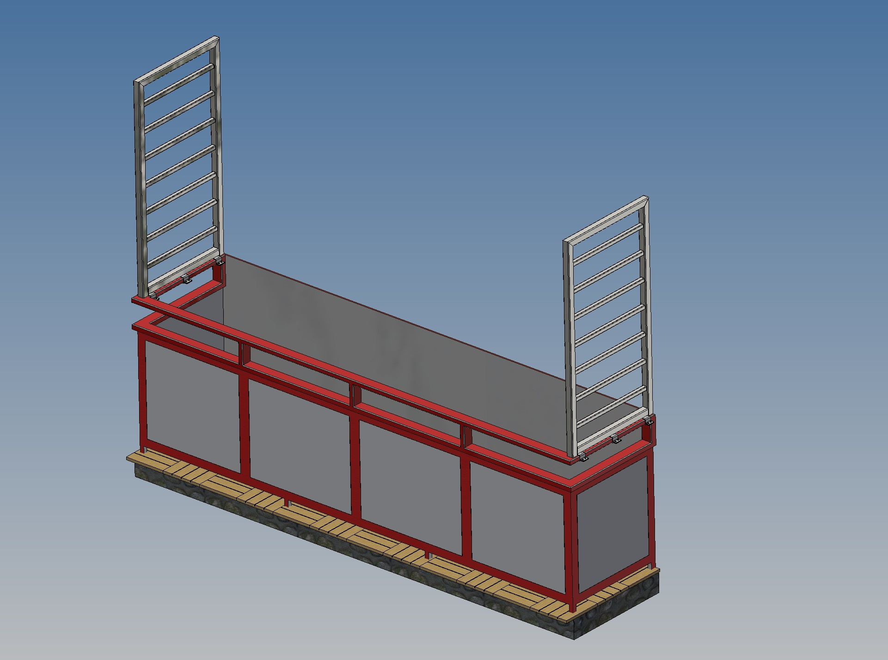
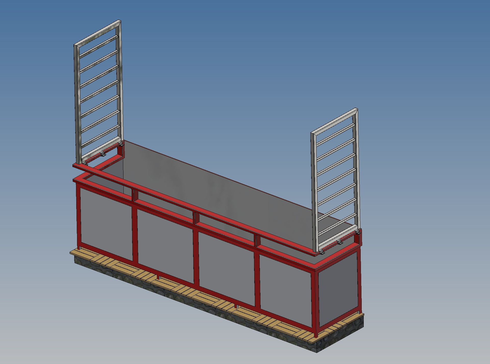

O JDM Engineering
Za značkou JDM Engineering stojí skúsený konštruktér s dlhoročnými skúsenosťami v oblasti strojárskej konštrukcie.
Pracujem v prostredí Autodesk Inventor, kde navrhujem a optimalizujem diely aj zložité zostavy.
Mojou prioritou je spoľahlivosť, presnosť a technické riešenie prispôsobené požiadavkám zákazníka.
Ukážky konštrukčnej práce

 


